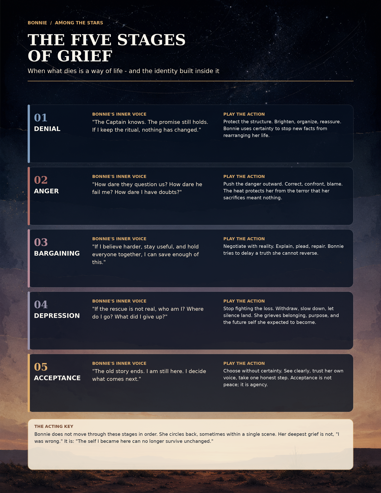

For two weeks in August, I had the rare opportunity to help develop a brand-new musical.
Among the Stars takes place in the West Texas desert on December 20, 2012, the day before the end of the Mayan calendar. A small group of believers awaits extraterrestrials who they are certain will rescue them before the world ends. Then a documentary crew arrives, a lost young man wanders into their compound, and the group's convictions begin to unravel.
I played Bonnie, the Captain's wife and closest partner.
At first, I approached her belief as something firm and uncomplicated. Bonnie had built her life around the Captain, the community and the promise that they would become ambassadors to the stars. She was organized, capable and completely committed.
But Bonnie's certainty could not simply disappear when doubt arrived. She had too much invested in it.
That became the key to understanding her.
What It Means to Develop a New Musical
Working on a developmental workshop differs completely from joining a finished production.
You do not receive a polished script, learn your part and execute an established vision. You sit in a room with the writers, director, music director and other actors. You ask questions. You explore what the creators intended, what the audience needs and what the material actually does when living, breathing people perform it.
Sometimes the answer changes the acting.
Sometimes it changes the script.
Sometimes everyone changes their minds together.
That process requires humility, openness and flexibility. It also gives an actor an extraordinary gift: the opportunity to help discover who a character is before the answers become fixed.
The Note That Unlocked Bonnie
During rehearsal, co-creator Aaron Kirk Douglas suggested that Bonnie might be moving through the five stages of grief: denial, anger, bargaining, depression and acceptance.
Not necessarily in order.
Not necessarily one stage at a time.
That distinction mattered. Bonnie was not progressing neatly through five emotional checkpoints. She could circle backward, experience several stages within one scene or reveal only a flash of what was happening underneath.
Aaron pointed to specific moments. Perhaps anger surfaced briefly during the line, "If silence is the answer, friend." Perhaps the Bonnie we encountered at the bus stop was depressed. Perhaps Unsinkable represented a form of acceptance for both Bonnie and the Captain.
Then Aaron shared something more personal. He had spent 25 years following an Indian guru before eventually confronting the question: What am I doing? Enlightenment isn't coming.
Suddenly, Bonnie's story felt much larger and much more human.
She was not simply grieving the possibility that aliens were not coming. She was grieving a way of life, the future she expected and the identity she had built inside that belief.
Her deepest fear was not, I was wrong.
It was: The person I became here can no longer survive unchanged.
Naturally, I Made an Infographic
I did what any perfectly normal actor with a marketing brain would do: I turned the note into an infographic.
With help from ChatGPT, I began translating each stage from an abstract emotional label into two practical questions:
What is Bonnie telling herself?
What action can I play?
That second question kept the work active. "Be sad" gives an actor very little to do. Protect the structure. Push the danger outward. Negotiate with reality. Stop fighting the loss. Choose without certainty. Those are playable actions.

I used the infographic as a working document throughout rehearsal. The five sections below follow that map, pairing Bonnie's inner experience with the actions I could actually play.
Denial: Protect the Structure
Bonnie begins by reinforcing the world she knows.
The Captain understands. The promise still holds. If she maintains the routines and keeps everyone focused, nothing fundamental has changed.
Denial did not make Bonnie foolish. It made her efficient. She brightened, organized and reassured because certainty protected her from facts that might rearrange her entire life.
You can see that Bonnie in Ambassador to the Stars, dreaming with the Captain about the future they believe awaits them.
Anger: Push the Danger Outward
As doubt enters the compound, Bonnie initially directs her anger away from herself.
How dare people question them? How dare the Captain fail her? How dare Bonnie herself entertain doubt after everything she has sacrificed?
Aaron's note helped me resist playing an entire scene as angry. The more interesting choice was allowing the heat to break through for only a moment before Bonnie regained control.
Anger protected her from terror.
Bargaining: Try to Save It
Bonnie's competence becomes a form of bargaining.
If she believes harder, remains useful and holds everyone together, perhaps she can preserve enough of this life to survive. She explains, pleads and tries to repair. She negotiates with a reality that has already begun to change.
That struggle sits at the center of my solo, Don't Know That I Believe.
This was my largest musical moment in the show and the place where Bonnie could no longer contain the conflict between what she had promised to believe and what she had begun to see.
At the workshop talkback, audience members described the song as haunting and moving. That meant a great deal to me because I did not want Bonnie's crisis to feel like a sudden rejection of everything that came before it.
Her belief gave her community, purpose and love. Losing it hurt because it mattered.
Depression: Stop Fighting the Loss
At the bus stop, Bonnie no longer has the energy to organize, correct or persuade.
If the rescue is not real, who is she? Where does she go? What did she give up to become this person?
The playable action became almost the absence of action: withdraw, slow down and allow silence to land.
Bonnie was grieving more than a failed prediction. She was grieving belonging, purpose and the future self she expected to become.
Acceptance: Choose Without Certainty
Acceptance did not mean Bonnie suddenly felt peaceful.
It meant she reclaimed agency.
The old story might be ending, but Bonnie remained. She could see more clearly, trust her own voice and take one honest step without knowing exactly where it would lead.
That is what I found in Unsinkable.
Acceptance was not certainty restored. It was Bonnie realizing she could continue without it.
The Gift of the Workshop
By the time we presented the reading on August 23, Bonnie felt completely different from the character I thought I had met two weeks earlier.
That transformation came from collaboration: Aaron sharing the personal experience beneath the story; director Bruce Akpan Hostetler helping us ground the show's stranger circumstances in recognizable human behavior; playwright Joel Cobbs continuing to refine the book; music director Barney Stein helping us uncover the score; and eight actors listening, questioning and building together.
The subject of Among the Stars is unusual. Its emotional center is not.
What happens when the story you built your life around stops holding?
What remains when certainty disappears?
And how do you begin again without pretending the loss did not matter?
Developing Bonnie reminded me why I love new work. An actor rarely gets to stand this close to the point where a character takes shape. It was challenging, joyful and deeply humbling to help discover her.
Bonnie does not end the show with all the answers.
She ends it with something better: her own voice.
Explore the music, workshop performances and continuing development of Among the Stars.